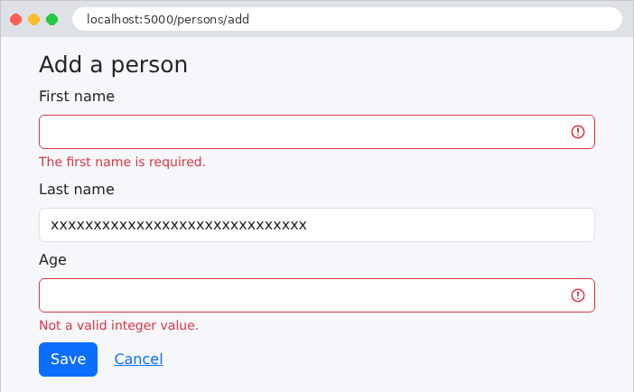

9. 分层架构与数据访问
前面的示例把数据保存在内存中。真正的应用程序会将数据存储在数据库中，并按层 来组织（参见引言中的图示）：
- Web 层（控制器、视图）：读取请求，调用业务层，选择视图；
- 业务层：业务规则；
- DAO 层（*Data Access Object*）：数据库查询。
每一层只了解其下一层，并且尽可能少地了解其细节：Web 层不知道 SQL，业务层不知道 HTML。这种分离使每一层都更易于理解、测试和演进。示例 28 将其应用于人员列表的管理：这是案例研究中医生和客户管理的缩小版。
在 [Python] 中，数据库访问分成几个层次来组织：
- DB-API 标准（PEP 249）为数据库驱动程序定义了通用接口：打开连接、执行 SQL 命令、读取行。对于 [MySQL] （以及 [MariaDB]），我们使用 [PyMySQL]，这是一个完全用 [Python] 编写的驱动程序，安装时不需要编译器；
- [SQLAlchemy] 是 [Python] 中使用最广泛的数据访问库。它分为两个层次。其核心 （*Core*）管理连接（包括连接池，它保持少量连接处于打开状态并借给查询使用，因为打开连接的代价很高），并根据 [Python] 表达式构造 SQL 语句，与具体的 DBMS 无关。其 ORM （*Object-Relational Mapper*，对象关系映射器）将 [Python] 类（即实体）映射到数据库表，并把读取到的行转换为对象。
这相当于 [Java] 中的 [JDBC]、[JPA] 和 [Hibernate]，或 [C#] 中的 [Entity Framework Core]。[Flask-SQLAlchemy] 扩展可以稍微简化在 [Flask] 应用程序中对 [SQLAlchemy] 的配置；我们直接使用 [SQLAlchemy]，这样可以展示底层发生了什么，并使业务层和 DAO 层独立于 [Flask]。
该示例需要一个正在运行的 [MySQL] （或 [MariaDB]）服务器：附录说明了如何使用 [Laragon] 安装一个。
9.1. 示例 28：三层人员管理系统
| 28-layers/
├── app.py
├── business/
│ ├── data.py
│ ├── exception.py
│ └── persons_business.py
├── config.py
├── controllers/
│ └── persons.py
├── dao/
│ └── persons_dao.py
├── database/
│ └── dbpersons.sql
├── entities/
│ └── person.py
├── models/
│ └── person_form.py
├── static/
│ ├── css/
│ │ └── styles.css
│ └── js/
│ └── app.js
└── templates/
├── fragments/
│ ├── confirmation.html
│ └── field.html
├── layout.html
└── persons/
├── form.html
└── list.html
|
9.1.1. 数据库
数据库 [dbpersons] 由 SQL 脚本创建。使用 [Laragon]，可以在例如 [HeidiSQL] 工具中运行它（“文件”菜单 / 运行 SQL 文件），或者在示例文件夹中通过命令行运行：
| mysql -u root < database/dbpersons.sql
|
[database/dbpersons.sql] 文件：
| -- database of example 28: a single table, [persons]
-- the script is written in UTF-8
SET NAMES utf8mb4;
DROP DATABASE IF EXISTS dbpersons;
CREATE DATABASE dbpersons CHARACTER SET utf8mb4 COLLATE utf8mb4_unicode_ci;
USE dbpersons;
CREATE TABLE persons (
id INT NOT NULL AUTO_INCREMENT,
-- the version of the row, increased by SQLAlchemy at each modification
version INT NOT NULL DEFAULT 0,
first_name VARCHAR(30) NOT NULL,
last_name VARCHAR(30) NOT NULL,
age INT NOT NULL,
PRIMARY KEY (id),
-- two persons cannot have the same first and last names
CONSTRAINT unq_persons_first_name_last_name UNIQUE (first_name, last_name)
) ENGINE = InnoDB;
INSERT INTO persons (first_name, last_name, age) VALUES
('Marie', 'Pélissier', 42),
('Jacques', 'Bromard', 35),
('Philippe', 'Jandot', 58);
|
- 第 3 行：脚本以 [UTF-8] 编写；这一点要告知服务器，以便数据中的重音符号（[Pélissier]）保持完整；
- 第 5 行：字符集 [utf8mb4] 接受所有字符（重音符号、表情符号等）。排序规则 [utf8mb4_unicode_ci] 在比较字符串时不区分大小写字母和重音符号：对于 [MySQL]，[pelissier] 与 [Pélissier] 是相等的；
- 第 11 行：版本号，每次修改该行时递增（参见下文的“乐观锁”）；
- 第 17 行：一个命名的唯一性约束：数据库不允许两个人拥有相同的名和姓。该名称将用于识别错误。
9.1.2. 配置
| # config.py：应用的配置（见示例 25）
# 密钥：它为会话（flash 消息）和 anti-CSRF 令牌签名
SECRET_KEY = "a-secret-key-for-example-28"
# WTForms 的错误消息由 WTForms 自己翻译（见示例 19）
WTF_I18N_ENABLED = False
# 数据库连接：一个 SQLAlchemy URL。
# mysql+pymysql：MySQL 数据库管理系统，通过 PyMySQL 驱动
# root: ：root 用户，无密码（Laragon 的默认设置）；
# 有密码时：root:myPassword@...
# localhost:3306/dbpersons：服务器、端口、数据库
# charset=utf8mb4：与数据库的交互使用 UTF-8
DATABASE_URL = "mysql+pymysql://root:@localhost:3306/dbpersons?charset=utf8mb4"
# True：发送到数据库的 SQL 语句会显示在控制台中
SQL_ECHO = False
|
- 第 15 行：[SQLAlchemy] 通过一个URL来指定数据库。[mysql+pymysql]：SQL 方言（[MySQL]）和驱动程序（[PyMySQL]）；然后是用户及其密码（这里是 [root]；没有密码，这是 [Laragon] 的配置）、服务器、端口和数据库；最后是设置：[charset=utf8mb4] 使驱动程序与服务器之间以 [UTF-8] 通信。如果你的服务器设置了密码，请修改这一行，或者设置环境变量 [FLASK_DATABASE_URL] （示例 25）；
- 第 18 行：当设置为 [True] 时，[SQLAlchemy] 会在控制台中显示发送给数据库的每一条 SQL 命令。这非常有参考价值，我们稍后会用到。
| # app.py：示例 28 的应用；三层的装配
from pathlib import Path
from flask import Blueprint, Flask
from flask_wtf.csrf import CSRFProtect
from sqlalchemy import create_engine
from sqlalchemy.orm import sessionmaker
from controllers.persons import persons
from dao.persons_dao import PersonsDao
from business.persons_business import PersonsBusiness
BOOTSTRAP = Path(__file__).resolve().parent.parent / "common" / "bootstrap"
def create_app():
app = Flask(__name__)
app.jinja_env.trim_blocks = True
app.jinja_env.lstrip_blocks = True
app.config.from_pyfile("config.py")
app.config.from_prefixed_env()
# 数据库访问：SQLAlchemy 的 "engine" 管理一个连接池
# （连接只打开一次，然后在各次请求之间复用）。
# pool_pre_ping：连接在复用之前会先经过测试
engine = create_engine(app.config["DATABASE_URL"], echo=app.config["SQL_ECHO"],
pool_pre_ping=True)
# 会话工厂；expire_on_commit=False：读取的对象在
# 事务结束后仍可使用（尤其是供视图使用）
sessions = sessionmaker(engine, expire_on_commit=False)
# 各层的装配：DAO -> 业务层；Web 层只认识业务层
app.extensions["business"] = PersonsBusiness(sessions, PersonsDao())
app.register_blueprint(Blueprint("bootstrap", __name__, static_folder=BOOTSTRAP,
static_url_path="/bootstrap"))
app.register_blueprint(persons)
CSRFProtect(app)
return app
if __name__ == "__main__":
create_app().run(port=5000, debug=True)
|
- 第 26–27 行：*引擎*（engine）是 [SQLAlchemy] 中管理数据库连接和连接池的对象。它在启动时只创建一次；第一个连接直到第一次请求时才会打开。[pool_pre_ping=True] 会在复用连接池中的连接之前先检查该连接：[MySQL] 服务器会关闭闲置时间过长的连接，否则应用程序会收到错误；
- 第 30 行：ORM 类型的会话 是用于读取和写入实体的对象；它从连接池中借用一个连接，并跟踪它所读取的实体，以检测这些实体的变化。[sessionmaker] 创建一个会话工厂，每次调用它都会生成一个会话。默认情况下，在事务结束时，会话会使实体“过期”（即忘记它们的值，下次使用时重新读取）。[expire_on_commit=False] 可以避免这一点：业务层返回的实体在事务结束之后仍然可用，可供显示它们的视图使用；
- 第 33 行：组装各层：业务层接收会话工厂和 DAO 层。Web 层只会了解业务层；
- 第 38 行：对整个应用程序启用防 CSRF 保护（示例 21）。
9.1.3. Person 实体
| # entities/person.py：[persons] 表中的一行
from sqlalchemy import String
from sqlalchemy.orm import DeclarativeBase, Mapped, mapped_column
# 所有实体的父类：SQLAlchemy 在其中记录
# 它每个子类的 类 <-> 表 映射
class Base(DeclarativeBase):
pass
class Person(Base):
# 表的名称
__tablename__ = "persons"
# 主键，由数据库生成（AUTO_INCREMENT）；SQLAlchemy 在每次 INSERT 之后
# 回读其值。Mapped[int]：该列的 Python 类型
id: Mapped[int] = mapped_column(primary_key=True)
# 乐观锁：见下面的 __mapper_args__
version: Mapped[int] = mapped_column()
first_name: Mapped[str] = mapped_column(String(30))
last_name: Mapped[str] = mapped_column(String(30))
age: Mapped[int]
# version_id_col：SQLAlchemy 在每次 UPDATE 时递增版本号，并添加
# 条件 "AND version = <读取到的值>"
__mapper_args__ = {"version_id_col": version}
def __init__(self, first_name: str, last_name: str, age: int):
self.first_name = first_name
self.last_name = last_name
self.age = age
|
- 第 8–9 行：应用程序中的所有实体都继承自同一个基类，该基类派生自 [DeclarativeBase]。[SQLAlchemy] 将每个实体的描述（其表、其列）存储在这个类中：这就是声明式模型；
- 第 14 行：与该类关联的表；
- 第 18 行：列由带有 [Mapped[type]] 注解的属性声明：即该列的类型，[Python] 类型。[mapped_column] 指定它的特性：这里是主键。默认情况下，整数主键由数据库生成（[AUTO_INCREMENT]）：[SQLAlchemy] 会在每次 [INSERT] 之后重新读取其值；
- 第 21–23 行：[String(30)] 指定列的长度（如果由 [SQLAlchemy] 自己创建表，这就很有用）。没有特殊特性的列可以只使用注解（[age]）。类型 [Mapped[str]] 使该列成为必填列（[NOT NULL]）；[Mapped[str | None]] 则会使它成为可选列；
- 第 27 行：[version_id_col] 指定版本列：[SQLAlchemy] 会在每次 [UPDATE] 时递增它，并为其添加条件 [AND version = <value read>]。如果在此期间有其他查询修改了该行，其版本就已发生变化；[UPDATE] 不会修改任何行，而 [SQLAlchemy] 会抛出 [StaleDataError] 异常。这就是乐观锁：不会阻塞任何操作，但能检测到并发修改；
- 第 29–32 行：一个构造函数，用于在一行中创建一个 Person 对象。
9.1.4. DAO 层
| # dao/persons_dao.py：DAO 层，只做查询，没有业务规则。
# 每个方法都接收由业务层打开的 SQLAlchemy 会话（SESSION）：
# 同一操作的所有查询因而共享同一个
# 连接和同一个事务
from sqlalchemy import delete, select
from sqlalchemy.orm import Session
from entities.person import Person
class PersonsDao:
# SELECT ... FROM persons ORDER BY last_name, first_name
def list(self, session: Session) -> list[Person]:
return list(session.scalars(select(Person).order_by(Person.last_name, Person.first_name)))
# SELECT ... WHERE id = ?；如果该人员不存在则为 None
def read(self, session: Session, id: int) -> Person | None:
return session.get(Person, id)
# 除 [except_id] 之外，姓和名都相同的人员：
# SELECT ... WHERE first_name = ? AND last_name = ? AND id <> ? LIMIT 1
def namesake(self, session: Session, first_name: str, last_name: str, except_id: int = 0) -> Person | None:
query = select(Person).where(Person.first_name == first_name, Person.last_name == last_name,
Person.id != except_id).limit(1)
return session.scalars(query).first()
# INSERT（新人员）：人员被添加到会话中，
# flush 立即发送 SQL 语句（而不是在 COMMIT 时）
def add(self, session: Session, person: Person) -> Person:
session.add(person)
session.flush()
return person
# DELETE FROM persons WHERE id = ?
def delete(self, session: Session, id: int):
session.execute(delete(Person).where(Person.id == id))
|
DAO 层只包含查询，不包含业务规则。每个方法都接收由业务层打开的会话：因此，一个业务操作的所有查询共享同一个连接和同一个事务。
- 第 15 行：[select(Person)] 针对“persons”表构造一个查询（[SELECT]) ；[order_by] 对其排序。列被写成类的属性（[Person.last_name]）：编辑器可以检查它们的名称，而且无需手写 SQL。[session.scalars(...)] 执行查询，并返回由读取到的行构造出的实体；
- 第 19 行：按主键读取，或返回 [None]；
- 第 23–26 行：[where] 添加条件，使用 [Python] 的运算符（[==]、[!=]）书写：[SQLAlchemy] 将它们翻译成带有参数 的 SQL（值绝不会被复制到 SQL 命令的文本中，这使得SQL 注入不可能发生）。[first()] 返回第一个实体，或返回 [None]；
- 第 30–33 行：[session.add] 将一个新实体交给会话；[flush] 立即将 [INSERT] 发送到数据库（如果没有 [flush]，它要等到 [COMMIT] 时才会发送）。然后数据库生成 ID，[SQLAlchemy] 将其存储在实体中；
- 第 37 行：一条以相同方式构造的 [DELETE]。
9.1.5. 业务层
| # business/data.py：一个人员的数据，即 Web 层传递过来的形式
from dataclasses import dataclass
@dataclass(frozen=True)
class PersonData:
first_name: str
last_name: str
age: int
|
由 Web 层传递给业务层的一个人员的数据：一个简单对象，与 [Flask]、[WTForms] 或 [SQLAlchemy] 无关。
| # business/exception.py：业务规则拒绝该操作；消息
# 面向用户
class BusinessException(Exception):
pass
|
业务层专用的异常类：某条业务规则拒绝了该操作，异常消息是给用户看的。
| # business/persons_business.py：业务层，只有业务规则，别无其他。
# 每个方法都打开自己的事务：在 with 块结束时提交（COMMIT），
# 如果块中抛出异常则回滚（ROLLBACK）
from sqlalchemy.exc import IntegrityError
from sqlalchemy.orm import sessionmaker
from sqlalchemy.orm.exc import StaleDataError
from dao.persons_dao import PersonsDao
from entities.person import Person
from business.data import PersonData
from business.exception import BusinessException
NAMESAKE = "A person already has these first and last names."
MODIFIED = "This record has been modified meanwhile: reload it."
UNKNOWN = "This person does not exist (anymore)."
class PersonsBusiness:
# sessions：SQLAlchemy 会话 "工厂"（见 app.py）
def __init__(self, sessions: sessionmaker, dao: PersonsDao):
self._sessions = sessions
self._dao = dao
def list(self) -> list[Person]:
# sessions.begin()：一个会话及其事务；with 块负责关闭它们
with self._sessions.begin() as session:
return self._dao.list(session)
def read(self, id: int) -> Person:
with self._sessions.begin() as session:
return self._read(session, id)
def add(self, data: PersonData) -> Person:
try:
with self._sessions.begin() as session:
# 规则 1：不允许有两个姓和名都相同的人员
if self._dao.namesake(session, data.first_name, data.last_name):
raise BusinessException(NAMESAKE)
return self._dao.add(session, Person(data.first_name, data.last_name, data.age))
except IntegrityError as e:
raise self._translate(e)
def edit(self, id: int, version: int | None, data: PersonData) -> Person:
try:
with self._sessions.begin() as session:
person = self._read(session, id)
# 规则 2：不修改在此期间已被他人修改的记录
if person.version != version:
raise BusinessException(MODIFIED)
if self._dao.namesake(session, data.first_name, data.last_name, id):
raise BusinessException(NAMESAKE)
# 读取的实体由会话 "跟踪"：只需
# 修改它即可；flush 立即发送 UPDATE
person.first_name = data.first_name
person.last_name = data.last_name
person.age = data.age
session.flush()
return person
except StaleDataError:
# UPDATE "WHERE id = ... AND version = ..." 没有修改任何行
raise BusinessException(MODIFIED)
except IntegrityError as e:
raise self._translate(e)
def delete(self, id: int) -> Person:
with self._sessions.begin() as session:
person = self._read(session, id)
self._dao.delete(session, id)
return person
def _read(self, session, id: int) -> Person:
person = self._dao.read(session, id)
if person is None:
raise BusinessException(UNKNOWN)
return person
# 两次同时进行的添加：数据库的唯一性约束拒绝了
# 第二次；e.orig：原始错误，来自 PyMySQL 驱动
@staticmethod
def _translate(e: IntegrityError) -> Exception:
if "unq_persons_first_name_last_name" in str(e.orig):
return BusinessException(NAMESAKE)
return e
|
- 第 27 行：每个方法都打开自己的会话和事务：[sessions.begin()] 返回一个已启动事务的会话。在 [with] 块结束时，事务被提交 （[COMMIT]），会话被关闭；如果块内发生异常，事务将被回滚 （[ROLLBACK]）：块内所做的所有更改都不会保留。因此，业务层决定了事务的范围：一个业务操作就是一个事务；
- 第 34–42 行：规则 1：任何两个人都不能有相同的名和姓。业务层在写入数据库之前检查这条规则，如果不满足，则抛出 [BusinessException] 。但这个检查还不够：两个同时发生的请求可能都验证到没有同名者，然后都继续插入数据。这时，数据库的唯一性约束会拒绝第二个 [INSERT]，而 [SQLAlchemy] 会触发 [IntegrityError]，[_translate] 方法再把它转换为同样的 [BusinessException]。数据库是最后一道防线；
- 第 44–64 行：规则 2：不得修改已被他人在此期间修改过的记录。更新表单携带所读取记录的版本（在隐藏字段中）；如果它与当前版本不同，就说明该记录自显示以来已发生变化。同样，数据库（通过乐观锁）会检测到并发修改发生在读取与更新之间的情况，即在读取和[UPDATE] 之间：这就是 [StaleDataError] 异常。请注意，修改只需更改所读取实体的属性即可完成：会话会跟踪这一点，而 [flush] 会发送一条 [UPDATE] ，其中只包含被修改的列；
- 第 66–70 行：删除一个人员会产生确认消息；
- 第 72–76 行：不存在的人员属于业务错误；
- 第 80–84 行：静态方法既不接收对象，也不接收类；它只是定义在类内部的一个函数。[e.orig] 是原始异常，即驱动程序 [PyMySQL] 的异常，其消息中包含被违反的约束的名称。其他的完整性错误则原样报告：这不是业务错误，而是编程错误。
9.1.6. Web 层
| # models/person_form.py：表单的字段及其约束（见示例 19）
from flask_wtf import FlaskForm
from wtforms import HiddenField, IntegerField, StringField
from wtforms.validators import DataRequired, InputRequired, Length, NumberRange, Optional
def clean(value):
return value.strip() if isinstance(value, str) else value
# 版本：一个整数，如果字段为空则为 None（添加表单）
def integer_or_none(value):
return int(value) if value not in (None, "") else None
class PersonForm(FlaskForm):
class Meta:
locales = ["en"]
first_name = StringField("First name", filters=[clean], validators=[
DataRequired("The first name is required."), Length(max=30, message="30 characters at most.")])
last_name = StringField("Last name", filters=[clean], validators=[
DataRequired("The last name is required."), Length(max=30, message="30 characters at most.")])
age = IntegerField("Age", validators=[
InputRequired("The age is required."),
NumberRange(min=0, max=150, message="The age must be between 0 and 150.")])
# 记录的版本，由隐藏字段携带（仅用于编辑）
version = HiddenField(filters=[integer_or_none])
|
表单 [WTForms] （示例 19）。隐藏字段 [version] 带有一个过滤器，将其转换为整数，如果为空（添加表单），则转换为 [None] 。
| # controllers/persons.py：Web 层；它只认识业务层
from flask import Blueprint, current_app, flash, redirect, render_template, url_for
from business.data import PersonData
from business.exception import BusinessException
from business.persons_business import PersonsBusiness
from models.person_form import PersonForm
persons = Blueprint("persons", __name__)
def business() -> PersonsBusiness:
return current_app.extensions["business"]
@persons.get("/")
def home():
return redirect(url_for("persons.list_persons"))
@persons.get("/persons")
def list_persons():
return render_template("persons/list.html", persons=business().list())
@persons.get("/persons/add")
def add_form():
return form_page("Add a person", url_for("persons.add"), PersonForm())
@persons.post("/persons/add")
def add():
form = PersonForm()
if not form.validate():
return form_page("Add a person", url_for("persons.add"), form)
try:
p = business().add(PersonData(form.first_name.data, form.last_name.data, form.age.data))
except BusinessException as e:
# 业务规则拒绝：我们再次显示表单，消息显示在页面底部
return form_page("Add a person", url_for("persons.add"), form, str(e))
flash(f"{p.first_name} {p.last_name} has been added.", "success")
return redirect(url_for("persons.list_persons"))
@persons.get("/persons/<int:id>/edit")
def edit_form(id):
try:
p = business().read(id)
except BusinessException as e:
flash(str(e), "error")
return redirect(url_for("persons.list_persons"))
# obj=p：表单的字段用 p 中同名的属性填充
return form_page("Edit a person", url_for("persons.edit", id=id),
PersonForm(obj=p))
@persons.post("/persons/<int:id>/edit")
def edit(id):
action = url_for("persons.edit", id=id)
form = PersonForm()
if not form.validate():
return form_page("Edit a person", action, form)
try:
data = PersonData(form.first_name.data, form.last_name.data, form.age.data)
p = business().edit(id, form.version.data, data)
except BusinessException as e:
return form_page("Edit a person", action, form, str(e))
flash(f"{p.first_name} {p.last_name} has been edited.", "success")
return redirect(url_for("persons.list_persons"))
@persons.post("/persons/<int:id>/delete")
def delete(id):
try:
p = business().delete(id)
flash(f"{p.first_name} {p.last_name} has been deleted.", "success")
except BusinessException as e:
# 没有表单可再次显示：错误同时以 flash 消息的形式传递
flash(str(e), "error")
return redirect(url_for("persons.list_persons"))
# 表单页面：标题、提交地址、表单、全局错误
def form_page(title: str, action: str, form: PersonForm, error: str | None = None):
return render_template("persons/form.html", title=title, action=action,
form=form, error=error)
|
- 第 12–13 行：业务层，控制器唯一了解的层；
- 第 32–42 行：添加操作，分三步：表单验证（输入错误）、调用业务层（业务规则），然后是 PRG 模式。[BusinessException] 会重新显示表单，并带有其页脚消息。[flash] 接收一个类别 作为其第二个参数（["success"]），模板利用它来选择消息的呈现方式；
- 第 46–54 行：编辑表单，已预先填充：参数 [obj] 会用对象中同名的属性填充表单字段，包括版本。不存在的人员会重定向到列表，并带有一条闪现的错误消息；
- 第 58–69 行：编辑，遵循与添加操作相同的模式；
- 第 73–80 行：删除。没有需要重新显示的表单：任何错误也会显示在弹出消息中，类别为 ["error"]。
Web 层既不包含 SQL，也不包含任何业务规则：它把请求转换为对业务层的调用，并把结果转换为页面。
| <!doctype html>
<html lang="en">
<head>
<meta charset="utf-8">
<title>Persons</title>
<link rel="stylesheet" href="{{ url_for('bootstrap.static', filename='css/bootstrap.min.css') }}">
<link rel="stylesheet" href="{{ url_for('static', filename='css/styles.css') }}">
</head>
<body>
<div class="container py-3" style="max-width: 40rem">
{# 成功消息（"success" 类别的 flash 消息）：显示在顶部 #}
{% for message in get_flashed_messages(category_filter=["success"]) %}
<div class="alert alert-success" role="status">{{ message }}</div>
{% endfor %}
<main>
{% block content %}{% endblock %}
</main>
{# 错误：来自当前请求，或来自重定向之前（flash 消息） #}
{% for message in get_flashed_messages(category_filter=["error"]) + ([error] if error else []) %}
<div class="error-area" role="alert">{{ message }}</div>
{% endfor %}
</div>
{% include "fragments/confirmation.html" %}
<script src="{{ url_for('static', filename='js/app.js') }}"></script>
</body>
</html>
|
- 第 12–14 行：[category_filter] 只渲染指定类别的闪现消息：成功消息，位于页面顶部；
- 第 19–21 行：错误，位于页面底部：先是重定向之前产生的错误（闪现消息），然后是当前请求的错误（变量 [error]）。运算符 [+] 用于连接两个列表。
| {% extends "layout.html" %}
{% block content %}
<h1 class="h3">Persons</h1>
<table class="table align-middle">
<thead><tr><th>First name</th><th>Last name</th><th>Age</th><th></th></tr></thead>
<tbody>
{% for p in persons %}
<tr>
<td>{{ p.first_name }}</td>
<td>{{ p.last_name }}</td>
<td>{{ p.age }}</td>
<td class="text-end">
<a class="btn btn-sm btn-outline-primary" href="{{ url_for('persons.edit_form', id=p.id) }}">Edit</a>
<form method="post" class="d-inline" action="{{ url_for('persons.delete', id=p.id) }}"
data-confirmation="Delete {{ p.first_name }} {{ p.last_name }}?">
<input type="hidden" name="csrf_token" value="{{ csrf_token() }}">
<button class="btn btn-sm btn-outline-danger" type="submit">Delete</button>
</form>
</td>
</tr>
{% endfor %}
</tbody>
</table>
<a class="btn btn-primary" href="{{ url_for('persons.add_form') }}">Add a person</a>
{% endblock %}
|
该列表包含示例 21 中的链接和按钮，以及它的确认窗口（文件 [fragments/confirmation.html] 和 [static/js/app.js] 与示例 21 中的相同）。
| {% extends "layout.html" %}
{% from "fragments/field.html" import field_row %}
{% block content %}
<h1 class="h3">{{ title }}</h1>
<form method="post" action="{{ action }}" novalidate>
{{ form.csrf_token }}
{# 所读取记录的版本：它会随表单一起回传 #}
{{ form.version }}
{{ field_row(form.first_name) }}
{{ field_row(form.last_name) }}
{{ field_row(form.age) }}
<button class="btn btn-primary" type="submit">Save</button>
<a class="btn btn-link" href="{{ url_for('persons.list_persons') }}">Cancel</a>
</form>
{% endblock %}
|
- 第 9 行：隐藏字段，用于携带所读取记录的版本；
- 第 10–12 行：来自示例 19 的宏。
9.1.7. 执行
人员列表：

填写有误的添加表单：数据输入错误由 Web 层检测。

同名者：输入是正确的，但业务层拒绝添加。由于比较是由数据库执行的，它既忽略大小写字母，也忽略重音符号：[marie pelissier] 同样会是 [Marie Pélissier] 的同名者。

成功的添加：

为了测试规则 2，我们在两个标签页中打开同一条记录。在第一个标签页中，修改年龄并保存。在仍然显示旧版本的第二个标签页中，同样修改该记录：

删除及其确认：


9.1.8. SQL 命令
让我们使用环境变量 [FLASK_SQL_ECHO=true] （在 [Windows] 下：[$env:FLASK_SQL_ECHO="true"]）重启应用程序，并在控制台中监视一次修改所涉及的 SQL 命令。显示 1 号人员的修改表单：
| INFO sqlalchemy.engine.Engine BEGIN (implicit)
INFO sqlalchemy.engine.Engine SELECT persons.id, persons.version, persons.first_name, persons.last_name, persons.age
FROM persons
WHERE persons.id = %(pk_1)s
INFO sqlalchemy.engine.Engine [generated in 0.00017s] {'pk_1': 1}
INFO sqlalchemy.engine.Engine COMMIT
|
一个事务，按主键执行 [SELECT]，其值作为参数传递（[%(pk_1)s]；参见 [PyMySQL] 的参数语法）。用新的年龄保存该记录：
| INFO sqlalchemy.engine.Engine BEGIN (implicit)
INFO sqlalchemy.engine.Engine SELECT persons.id, persons.version, persons.first_name, persons.last_name, persons.age
FROM persons
WHERE persons.id = %(pk_1)s
INFO sqlalchemy.engine.Engine [cached since 0.05972s ago] {'pk_1': 1}
INFO sqlalchemy.engine.Engine SELECT persons.id, persons.version, persons.first_name, persons.last_name, persons.age
FROM persons
WHERE persons.first_name = %(first_name_1)s AND persons.last_name = %(last_name_1)s AND persons.id != %(id_1)s
LIMIT %(param_1)s
INFO sqlalchemy.engine.Engine [generated in 0.00016s] {'first_name_1': 'Marie', 'last_name_1': 'Pélissier', 'id_1': 1, 'param_1': 1}
INFO sqlalchemy.engine.Engine UPDATE persons SET version=%(version)s, age=%(age)s WHERE persons.id = %(persons_id)s AND persons.version = %(persons_version)s
INFO sqlalchemy.engine.Engine [generated in 0.00015s] {'version': 1, 'age': 43, 'persons_id': 1, 'persons_version': 0}
INFO sqlalchemy.engine.Engine COMMIT
|
在单个事务中，我们可以看到以下内容：读取记录、查找同名者，然后是 [UPDATE]。该事务只修改发生变化的列（[age]），递增版本（从 0 到 1），并设置乐观锁条件（[AND persons.version = 0]）。条目 [cached since] 表示 [SQLAlchemy] 复用了先前构造的请求所生成的 SQL。现在我们再次提交同一个表单，版本仍然为 0：
| INFO sqlalchemy.engine.Engine BEGIN (implicit)
INFO sqlalchemy.engine.Engine SELECT persons.id, persons.version, persons.first_name, persons.last_name, persons.age
FROM persons
WHERE persons.id = %(pk_1)s
INFO sqlalchemy.engine.Engine [cached since 0.09593s ago] {'pk_1': 1}
INFO sqlalchemy.engine.Engine ROLLBACK
|
所读取的版本（1）与表单的版本（0）不一致：业务层抛出了 [BusinessException]，它回滚了事务（[ROLLBACK]），页面显示“This record has been modified meanwhile: reload it.” 同样，添加同名者的过程在查找同名者之后就会停止，不会有 [INSERT]。